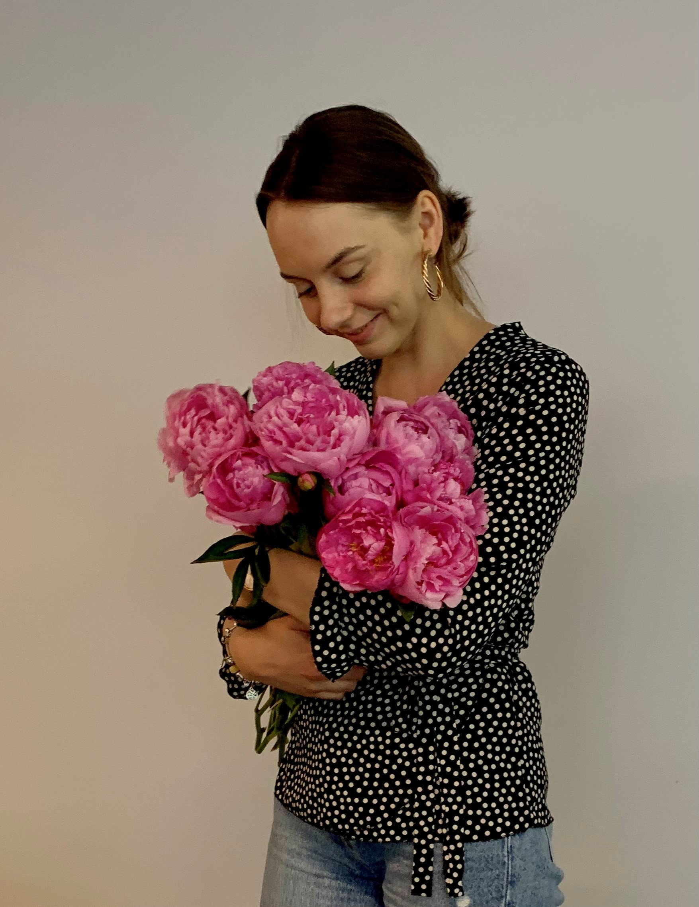

Apie mane

Mano vardas Diana, bet taip mane vadina tik tėvai. Visi kiti vadina Dija. Kaip, kada ir kodėl mano ir taip trumpą vardą bendraklasiai sutrumpino dar labiau - nebeprisimenu 😄
Šią vasarą man suėjo 30 metų - kad ir kaip bijojau šio skaičiaus, kol kas gyvenimas tik gerėja 😋 Nepaisant to, kad įkopus į kevirtą dešimtį pradėjo varginti nugaros skausmai 👵
Dirbu finansų vadove transporto paslaugų įmonėje jau beveik 8 metus.
Fun facts
- Labai mėgstu gėles, o ypatingai - bijūnus (meilę atspindi ir nuotrauka❤️)
- Mano svajonė paauglystėje ir iki šiol - dirbti lietuvių kalbos mokytoja. Deja ši svajonė (kol kas) neišsipildė, nes mama "rekomendavo" pasirinkti geriau apmokamą profesiją...🙄 Never say never, gal kažkada šita svajonė išsipildys ir vėl galėsiu grįžti į savo mokyklą, kurioje prabėgo gražiausi mano metai (nuskambėjo, lyg man būtų 70...)!
- Mylimiausia, gražiausia ir skaniausia mano aplankyta šalis, kuri žavi nuolat ten grįžus - Italija 🍕
- Mano hobis - maisto gamyba. Žmonės kalba, kad gaminu skaniausius šaltibarščius visatoje. Juos valgau ir žiemą, bent kartą per mėnesį būtinai... O kai gamina kiti - labiausiai mėgstu itališkus ir japoniškus patiekalus.
- Labai mėgstu skaityti knygas, daugiausia - klasikinius ir šiuolaikinius romanus. Mano paskutinė perskaityta knyga - A. Burgess "Prisukamas apelsinas", o didžiausią įspūdį palikusios vienos išskirti negaliu.... Tą titulą dalinasi "Erškėčių paukščiai", "Apšviestoji" ir "Petro imperatorė"
- Mano visi šeimos nariai pasirinko gimti per šventes - mama rugsėjo 1 (mokslo ir žinių diena), tėtis vasario 14 (meilės diena), sesuo kovo 20 (žemės diena), o aš pati išsirinkau pačią geriausią - laisvadienį per Jonines birželio 24 🥳
- Nujaučiu, kad faktų jau gana...